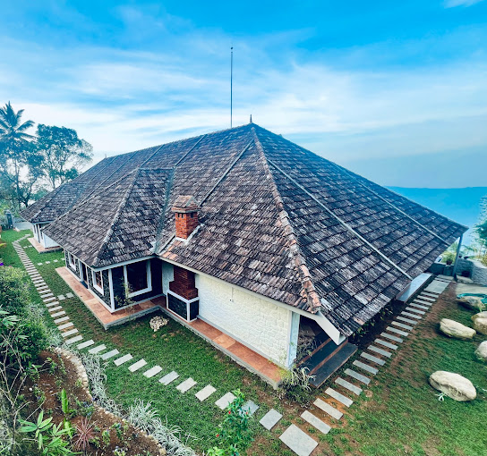
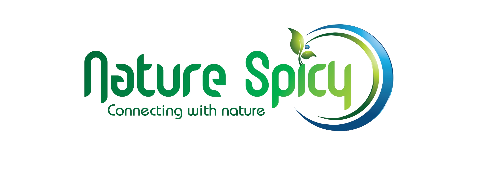

Nature Sanctuary
Nature Sanctuary Urumbi Hills features a seasonal outdoor swimming pool, garden, a terrace and restaurant in Mundakāyam. The accommodation offers room service and a 24-hour front desk for guests. At the resort, every room has a patio. With a private bathroom equipped with a shower and free toiletries, rooms at Nature Sanctuary Urumbi Hills also have free WiFi, while selected rooms will provide you with a mountain view. At the accommodation all rooms come with bed linen and towels. The daily breakfast offers buffet, à la carte or continental options. The nearest airport is Cochin International Airport, 108 km from Nature Sanctuary Urumbi Hills.
Try HereGlobal International

Global International specializes in providing expert guidance and support to individuals seeking employment opportunities outside their home countries. With a deep understanding of the global job market and extensive experience in international recruitment, we are dedicated to helping our clients secure fulfilling careers abroad.
Try HereNature Spicy
Conceptualized and designed an e-commerce platform for selling spices using Figma ; currently developing using React for the frontend and Node.js for the backend, targeting a 25% increase in sales efficiency.
Developemt in Progress